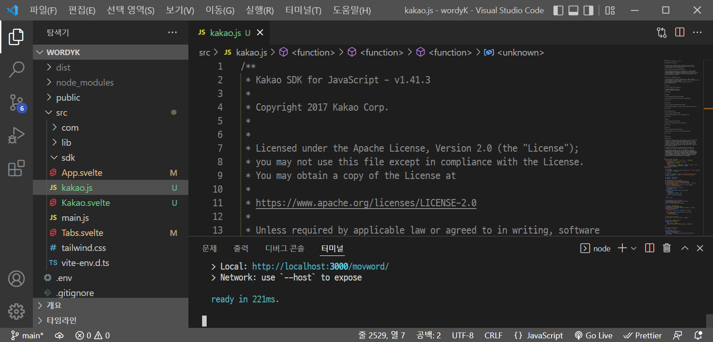

-
선택: 2. 서비스에 카카오링크를 적용하는 방법
-
서비스: Svelte Web 애플리케이션
-
언어: JavaScript
-
프레임 워크: Svelte (버전: 3.46.4)
-
-
테스트 환경
-
빌드 툴: Vite (버전: 2.7.2)
-
브라우저: Chrome (버전: 100.0.4896.127, 공식 빌드, 64비트)
-
이 과제 문서는 PDF로 제출되었으나, 필요에 따라 Web 페이지 또는 GitHub 문서로 확인할 수 있습니다.
1. 카카오링크: Svelte
이 문서는 Svelte Web 애플리케이션(이하 Svelte)에서 Kakao SDK for JavaScript(이하 JavaScript SDK)를 사용한 카카오링크 API 구현 방법을 안내합니다.
이 문서에 포함된 기능 일부는 를 통해 사용해 볼 수 있습니다.
1.1. 미리 보기
다음은 Svelte 프로젝트에 기본 템플릿 호출 함수(sendDefault())를 사용하여 텍스트 메시지 호출 본문을 작성하고 버튼에 연결한 예제입니다.
<script>
// 설치하기
import "./kakao.js";
// 초기화
Kakao.init("JAVASCRIPT_KEY");
console.log(Kakao.isInitialized());
// 함수 호출하기
function shareKakao() {
Kakao.Link.sendDefault({
objectType: "text",
text: "기본 템플릿으로 제공되는 텍스트 템플릿은 텍스트를 최대 200자까지 표시할 수 있습니다. 텍스트 템플릿은 텍스트 영역과 하나의 기본 버튼을 가집니다. 임의의 버튼을 설정할 수도 있습니다. 여러 장의 이미지, 프로필 정보 등 보다 확장된 형태의 카카오링크는 다른 템플릿을 이용해 보낼 수 있습니다.",
link: {
mobileWebUrl: "https://developers.kakao.com",
webUrl: "https://developers.kakao.com",
},
});
}
</script>
<!-- 버튼 만들기 -->
<button on:click={shareKakao}>
<img src="https://developers.kakao.com/assets/img/about/logos/kakaolink/kakaolink_btn_medium.png"
alt="카카오링크 보내기 버튼"
/>
</button>이 문서에서 위 코드의 구성 요소에 대한 설명과 추가 내용을 확인할 수 있습니다.
1.2. 시작하기 전에
-
에서 메시지 API와 메시지 종류 및 구성 방법에 대한 내용을 확인하고 선택합니다.
호출 방법은, Svelte는 공유하기 버튼을 JavaScript SDK를 통해 추가하기 어렵기 때문에, 직접 만든 버튼을 사용하는 것으로 버튼 만들기에서 안내합니다. -
에서 앱 만들기, 앱 키 발급하기, Web 플랫폼 등록 관련 내용을 확인하고 과정을 수행합니다.
-
Svelte는 Vite, Rollup, Webpack과 같은 빌드 도구와 함께 사용됩니다. 이 문서에서는 Vite 플러그인 사용 기준으로 안내합니다. 빌드 도구에 대한 자세한 내용은 해당 사이트 문서에서 확인할 수 있습니다.
-
Vite: https://vitejs.dev/
-
Rollup: https://rollupjs.org/
-
Webpack: https://webpack.js.org/
-
1.3. Svelte 프로젝트 환경 설정
1.3.1. 설치하기
-
SDK 다운로드에서 최신 버전 JavaScript SDK를 내려받습니다.
-
다운로드한 JavaScript SDK 파일(kakao.js)을 Svelte 프로젝트 폴더 내 원하는 경로에 복사합니다.
App.svelte와 같은 폴더(./src)에 복사했다고 가정하고 설명합니다. -
복사한 파일을 카카오링크 API를 구현 할 Svelte 파일(
App.svelte또는*.svelte)의script영역 상단에 가져오기(import) 합니다.<script> import "./kakao.js"; </script>
1.3.2. 초기화
설치하기를 참고하여 JavaScript SDK 파일을 Svelte 파일에 가져오기 한 후, 다음의 JavaScript SDK 초기화 함수를 호출합니다. JAVASCRIPT_KEY에 에서 확인한 JavaScript 키를 할당해야 합니다.
Kakao.init("JAVASCRIPT_KEY");
Kakao.isInitialized();다음은 JavaScript SDK 파일을 가져와 초기화 함수를 호출하고, 이어서 초기화가 잘 되었는지 확인하는 함수를 호출하는 예제입니다.
<script>
import "./kakao.js";
// SDK를 초기화 합니다. 사용할 앱의 JavaScript 키를 입력해야 합니다.
Kakao.init("JAVASCRIPT_KEY");
// SDK 초기화 여부를 콘솔에 출력합니다.
console.log(Kakao.isInitialized());
</script>필요한 경우 onMount() 함수를 사용하여 컴포넌트가 DOM에 렌더링 될 때 호출할 수도 있습니다. 아래 예제를 참고합니다.
<script>
import { onMount } from "svelte";
import "./kakao.js";
onMount(() => {
Kakao.init("JAVASCRIPT_KEY");
console.log(Kakao.isInitialized());
});
</script>JavaScript SDK가 정상적으로 초기화된 상태라면, 해당 웹 페이지 실행 시 개발자 도구 콘솔에 true가 출력됩니다. false가 출력됐다면 초기화에 사용한 JavaScript 키 값이 올바른지 확인합니다.
1.4. 함수 호출하기
JavaScript SDK의 카카오링크 API는 두 가지 방법으로 호출할 수 있지만, Svelte는 공유하기 버튼을 JavaScript SDK를 통해 추가하기 어렵기 때문에, 이 문서에서는 직접 추가한 버튼에 연결하는 방법을 설명합니다.
-
호출 함수 선택하기
아래 표에서 전송 가능한 메시지 템플릿의 종류에 따른 호출 함수를 선택합니다.메시지 종류 메시지 구성 방법 함수 피드, 리스트, 위치, 커머스, 텍스트
기본 템플릿
피드, 리스트, 커머스
사용자 정의 템플릿
스크랩
기본 템플릿
사용자 정의 템플릿
메시지 템플릿메시지 템플릿 종류와 기능에 대한 자세한 내용은 메시지 템플릿을 참고합니다.
-
호출 본문 작성하기
script영역에 임의의 함수(shareKakao())를 선언한 뒤, 내부에 선택한 호출 함수(sendDefault())를 사용하여 호출 본문(텍스트 메시지, 기본 템플릿)을 작성합니다. 아래 예제를 참고합니다.function shareKakao() { Kakao.Link.sendDefault({ objectType: "text", text: "기본 템플릿으로 제공되는 텍스트 템플릿은 텍스트를 최대 200자까지 표시할 수 있습니다. 텍스트 템플릿은 텍스트 영역과 하나의 기본 버튼을 가집니다. 임의의 버튼을 설정할 수도 있습니다. 여러 장의 이미지, 프로필 정보 등 보다 확장된 형태의 카카오링크는 다른 템플릿을 이용해 보낼 수 있습니다.", link: { mobileWebUrl: "https://developers.kakao.com", webUrl: "https://developers.kakao.com", }, }); } -
필요한 경우 버튼 내부에 호출 본문을 작성할 수도 있습니다. 호출 인라인 작성을 참고합니다.
-
아래에서 템플릿 종류별 메시지 보내기 관련 내용을 확인할 수 있습니다. 각 항목의 직접 만든 버튼 사용하기 내용을 확인합니다.
1.5. 버튼 만들기
-
카카오링크 API를 구현 할 Svelte 파일(
App.svelte또는*.svelte)의script영역 밖에 아래의 button 태그를 추가합니다.<button on:click={shareKakao}> <img src="https://developers.kakao.com/assets/img/about/logos/kakaolink/kakaolink_btn_medium.png" alt="카카오링크 보내기 버튼" /> </button> -
필요한 경우 버튼 내부에 호출 본문을 작성할 수도 있습니다. 호출 인라인 작성을 참고합니다.
-
여기까지 설명한, 호출 함수(
sendDefault())를 사용하여 호출 본문(텍스트 메시지, 기본 템플릿)을 작성하고 버튼에 연결한 전체 예제는 미리 보기에서 확인할 수 있습니다.
<button
on:click={() => {
Kakao.Link.sendDefault({
objectType: "text",
text: "기본 템플릿으로 제공되는 텍스트 템플릿은 텍스트를 최대 200자까지 표시할 수 있습니다. 텍스트 템플릿은 텍스트 영역과 하나의 기본 버튼을 가집니다. 임의의 버튼을 설정할 수도 있습니다. 여러 장의 이미지, 프로필 정보 등 보다 확장된 형태의 카카오링크는 다른 템플릿을 이용해 보낼 수 있습니다.",
link: {
mobileWebUrl: "https://developers.kakao.com",
webUrl: "https://developers.kakao.com",
},
});
}}
>
<img src="https://developers.kakao.com/assets/img/about/logos/kakaolink/kakaolink_btn_medium.png"
alt="카카오링크 보내기 버튼"
/>
</button>1.6. 문제 해결하기
제기된 이슈와 그 해결 방법에 대해 기록합니다. 일정 수준 이상 분량이 늘어나면 별도 문서로 관리하고 이 항목은 리스트 형태의 링크로 대체합니다.